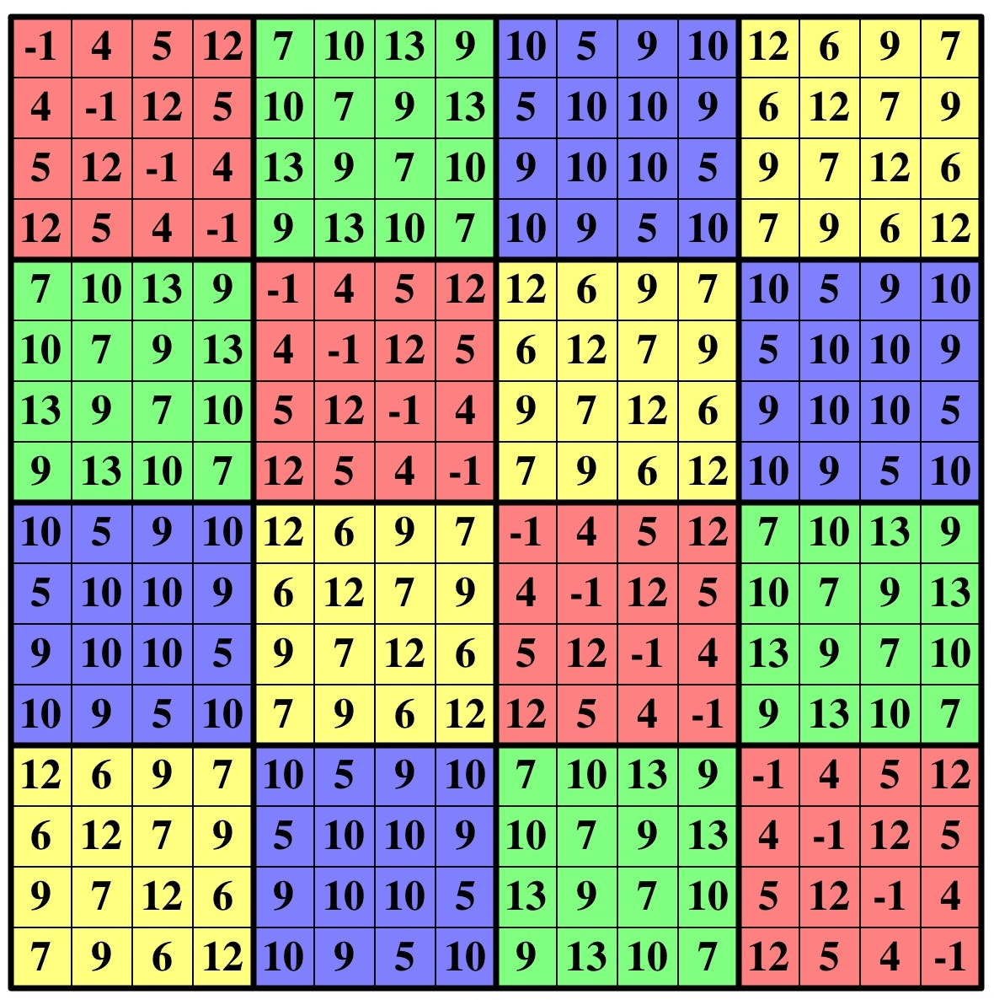

#include <stdio.h>
#include <stdlib.h>
void recursive_enumerate(int zeros, int ones, int twos, char *string, int loc)
{
if (zeros > 0) {
string[loc] = '0';
recursive_enumerate(zeros - 1, ones, twos, string, loc+1);
}
if (ones > 0) {
string[loc] = '1';
recursive_enumerate(zeros, ones - 1, twos, string, loc+1);
}
if (twos > 0) {
string[loc] = '2';
recursive_enumerate(zeros, ones, twos - 1, string, loc+1);
}
if (zeros + ones + twos == 0) {
string[loc] = '\0';
printf("%s\n", string);
}
}
main(int argc, char **argv)
{
int ones;
int twos;
int zeros;
char *s;
if (argc != 4) {
fprintf(stderr, "usage: enum zeros ones two\n");
exit(1);
}
zeros = atoi(argv[1]);
ones = atoi(argv[2]);
twos = atoi(argv[3]);
s = (char *) malloc(sizeof(char)*(zeros+ones+twos+1));
recursive_enumerate(zeros, ones, twos, s, 0);
}
|
UNIX> enum 1 1 1 012 021 102 120 201 210 UNIX> enum 2 1 2 00122 00212 00221 01022 01202 01220 02012 02021 02102 02120 02201 02210 10022 10202 10220 12002 12020 12200 20012 20021 20102 20120 20201 20210 21002 21020 21200 22001 22010 22100 UNIX>
A B
B A
Where A is the matrix with n/2 rows and columns, consisting
of the first n/2 elements, and
B is the matrix with n/2 rows and columns, consisting
of the second n/2 elements.
The following picture is a 16x16 matrix with the following elements:
-1 4 5 12 7 10 13 9 10 5 9 10 12 6 9 7

My second program takes n elements on standard input, and prints out the matrix composed of those elements. It is recursive, and amazingly simple. It is in fm.c, and below:
#include <stdio.h>
#include <stdlib.h>
#include <string.h>
#include "fields.h"
fill_matrix(int **matrix, int rows, int *elements,
int srow, int scol)
{
if (rows == 1) {
matrix[srow][scol] = *elements;
} else {
fill_matrix(matrix, rows/2, elements, srow, scol);
fill_matrix(matrix, rows/2, elements, srow+rows/2, scol+rows/2);
fill_matrix(matrix, rows/2, elements+(rows/2), srow, scol+rows/2);
fill_matrix(matrix, rows/2, elements+(rows/2), srow+rows/2, scol);
}
}
main()
{
IS is;
int *elements;
int n, i, j, **matrix;
is = new_inputstruct(NULL);
get_line(is);
n = is->NF;
elements = (int *) malloc(sizeof(int)* n);
for (i = 0; i < n; i++) {
elements[i] = atoi(is->fields[i]);
}
matrix = (int **) malloc(sizeof(int *)* n);
for (i = 0; i < n; i++) {
matrix[i] = (int *) malloc(sizeof(int)* n);
}
fill_matrix(matrix, n, elements, 0, 0);
for (i = 0; i < n; i++) {
for (j = 0; j < n; j++) {
printf("%4d", matrix[i][j]);
}
printf("\n");
}
}
|
UNIX> echo 1 2 3 4 5 6 7 8 | fm 1 2 3 4 5 6 7 8 2 1 4 3 6 5 8 7 3 4 1 2 7 8 5 6 4 3 2 1 8 7 6 5 5 6 7 8 1 2 3 4 6 5 8 7 2 1 4 3 7 8 5 6 3 4 1 2 8 7 6 5 4 3 2 1 UNIX> echo -1 4 5 12 7 10 13 9 10 5 9 10 12 6 9 7 | fm -1 4 5 12 7 10 13 9 10 5 9 10 12 6 9 7 4 -1 12 5 10 7 9 13 5 10 10 9 6 12 7 9 5 12 -1 4 13 9 7 10 9 10 10 5 9 7 12 6 12 5 4 -1 9 13 10 7 10 9 5 10 7 9 6 12 7 10 13 9 -1 4 5 12 12 6 9 7 10 5 9 10 10 7 9 13 4 -1 12 5 6 12 7 9 5 10 10 9 13 9 7 10 5 12 -1 4 9 7 12 6 9 10 10 5 9 13 10 7 12 5 4 -1 7 9 6 12 10 9 5 10 10 5 9 10 12 6 9 7 -1 4 5 12 7 10 13 9 5 10 10 9 6 12 7 9 4 -1 12 5 10 7 9 13 9 10 10 5 9 7 12 6 5 12 -1 4 13 9 7 10 10 9 5 10 7 9 6 12 12 5 4 -1 9 13 10 7 12 6 9 7 10 5 9 10 7 10 13 9 -1 4 5 12 6 12 7 9 5 10 10 9 10 7 9 13 4 -1 12 5 9 7 12 6 9 10 10 5 13 9 7 10 5 12 -1 4 7 9 6 12 10 9 5 10 9 13 10 7 12 5 4 -1 UNIX>